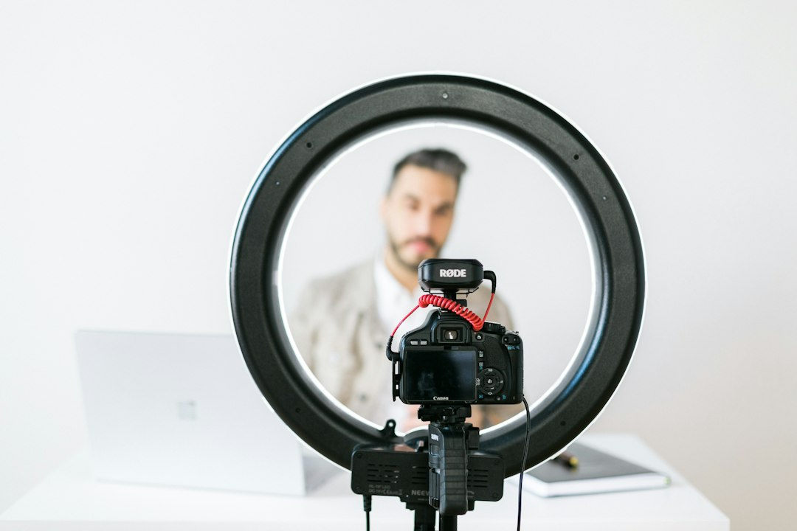

Vision UGC: Come Rivoluzionare la Creazione Video nei Settori E-Commerce, Media Buying e Marketing Digitale

Vision UGC: La Nuova Frontiera per E-Commerce Manager, Media Buyer e Brand nella Produzione Video UGC
- Il settore e-commerce e marketing digitale vive una trasformazione guidata dall’accelerazione tecnologica nella produzione video.
- I costi insostenibili e i lunghi tempi di produzione con creator umani penalizzano la scalabilità e l’efficacia delle campagne.
- Vision UGC, con attori digitali iper-realistici e video generati in 24 ore, rappresenta la soluzione tecnologica indispensabile per ottimizzare risultati e budget.
Analisi approfondita della notizia e delle implicazioni operative
Negli ultimi mesi, il settore dell’e-commerce e del digital marketing ha visto crescere esponenzialmente la domanda di contenuti video User Generated Content (UGC), fondamentali per aumentare l’engagement e la conversione degli utenti. Tuttavia, la tradizionale produzione di video con creator umani presenta una serie di sfide e inefficienze strutturali. I costi di collaborazione con influencer e modelle, le tempistiche di spedizione dei campioni fisici, oltre all’incertezza del risultato qualitativo e commerciale sono fattori che rallentano fortemente il time to market delle campagne.
L’evoluzione tecnologica, per i prossimi 24 mesi, punterà a trasformare radicalmente questo scenario, ponendo l’attenzione sulla generazione automatizzata di contenuti video iper-realistici, grazie all’intelligenza artificiale e al machine learning avanzato. Vision UGC, con la sua piattaforma Seedance 2.0 che impiega attori digitali realistici per realizzare video UGC, si inserisce in modo naturale in questa evoluzione, portando una rivoluzione profonda nelle modalità operative di brand, agenzie di marketing e media buyer.
Le conseguenze e i costi di non agire
Il mantenimento delle pratiche tradizionali di produzione video comporta penalizzazioni significative in termini di costi e opportunità perse. I creator umani richiedono investimenti economici elevati, spesso non giustificati dall’effettivo impatto commerciale dei video generati. Inoltre, la spedizione di campioni fisici rallenta ulteriormente i tempi di realizzazione, con rischi di gare di mercato perse o campagne fuori tempistica.
Questi fattori portano a una scarsa efficienza operativa, riducendo la capacità di testare e scalare campagne con contenuti video personalizzati e di alta qualità, elementi ormai imprescindibili per competere nel mercato digitalizzato e ipercompetitivo. Non ottimizzare questi processi significa rinunciare a significative porzioni di traffico e conversioni, oltre a gravare inutilmente sul budget con spese non strategiche.
Come Vision UGC risolve il problema
La piattaforma Vision UGC di RM Studio rappresenta la risposta tecnologica più all’avanguardia per superare tali problematiche. Grazie alla tecnologia Seedance 2.0, Vision UGC utilizza attori e modelle digitali iper-realistici, capaci di registrare video UGC verticali di qualità broadcast con dizione perfetta.
La vera forza di Vision UGC risiede nella rapidità di esecuzione e semplicità: partendo unicamente dal link del prodotto, è possibile ottenere video personalizzati in sole 24 ore. Il processo elimina completamente la necessità di spedizioni di campioni fisici e colloqui con creator umani, riducendo tempi e costi in maniera drastica e migliorando la coerenza qualitativa dei contenuti.
Questa soluzione permette agli e-commerce manager, media buyer, brand e agenzie di marketing di testare diversi creative hook in tempi rapidissimi, ottimizzando così il budget pubblicitario e aumentando l’efficacia complessiva delle campagne. L’offerta modulare con Starter Pack a €50 o Pro Bundle da €120 per tre ganci creativi permette inoltre una scalabilità graduale secondo le esigenze di ogni cliente.
| Aspetti | Gestione Tradizionale | Con Vision UGC |
|---|---|---|
| Tempi di produzione | Settimane fra briefing, spedizioni e riprese | 24 ore a partire dal link prodotto |
| Costi | Elevati e variabili, dipendenti da creator umani | Prezzi standardizzati, Starter Pack €50 |
| Qualità video e dizione | Variabile, spesso con risultati non soddisfacenti | Ultra-realistica, con dizione perfetta gestita da IA |
| Scalabilità | Limitata e costosa | Elevata, flessibile, moduli Pro bundle |
| Necessità di campioni fisici | Obbligatoria, con ulteriore rallentamento | Non necessaria |
💡 Ti è stato utile questo approfondimento?
Condividilo con un collega o un amico del settore E-Commerce Manager, Media Buyer, Brand e Agenzie di Marketing a cui potrebbe interessare!
FAQ
1. Quanto tempo richiede mediamente la produzione di un video con Vision UGC?
La piattaforma consente di generare un video UGC iper-realistico in sole 24 ore a partire dal semplice link del prodotto.
2. Che livello di personalizzazione offrono gli attori digitali di Seedance 2.0?
Gli attori digitali sono altamente personalizzabili in termini di look, dizione e stile comunicativo, garantendo un output che rispecchia perfettamente l’identità del brand e il target di riferimento.
3. Quali sono i vantaggi economici nell’utilizzo di Vision UGC rispetto alla produzione tradizionale?
La piattaforma elimina costi accessori come spedizioni e fee variabili ai creator, offrendo prezzi chiari e contenuti pronti in tempi rapidissimi, consentendo anche campagne di test più frequenti e scalabili.
Inizia Subito
Starter Pack a €50 o Pro Bundle (3 ganci creativi) a €120.
Fonti Ufficiali e Risorse Esterne
Scopri l'Intelligenza Artificiale per la tua attività
Ottimizza i processi e aumenta le vendite con le soluzioni B2B di RM Studio.
Scopri Vision UGC